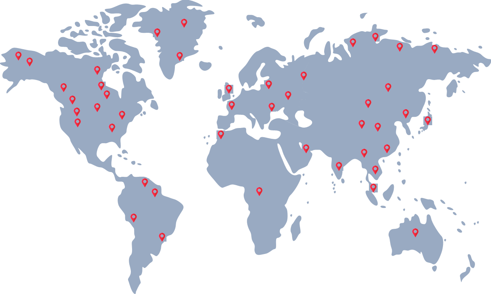

Promote world-class practices
Through conferences, workshops and special interest groups.
About us
DAMA Kuala Lumpur & Selangor is a non-profit, vendor-independent chapter of DAMA International, dedicated to advancing data practitioners and enthusiasts across Malaysia.
About DAMA International
DAMA International (DAMA-I) is the premier global community for data management professionals. Headquartered in Vancouver, it has shaped the data management landscape since its establishment in 1980.
DAMA-I is led by an elected Board of Directors who serve three-year terms, ensuring continuity, fresh perspectives and sustained commitment to the profession. It provides the foundation for chapters worldwide, including DAMA Chapter Malaysia, fostering collaboration and knowledge sharing across the global data community.
*Number of chapters as of July 2026. All chapters are non-profit, vendor-independent organisations supporting local data communities.

DAMA International
Enabling leading data and information management practices, resulting in positive global outcomes.
DAMA-I serves global data citizens by providing a community space for knowledge sharing, recognising professional achievement, and promoting ethical and effective data practices, resulting in responsible and effective data management worldwide.
Promote the understanding, development and practice of managing data and information as key enterprise assets to support the organisation.
Elevating the data management profession through standards, skills and collaboration.
DAMA Malaysia chapter overview
Through education, networking and professional development excellence. We were officially approved by DAMA International as DAMA Chapter Malaysia – Kuala Lumpur (Forming Chapter) on 1 March 2023.
Our goals
Through conferences, workshops and special interest groups.
Institutionalising a pervasive culture of data management in organisations.
An open forum for sharing information, problems, ideas, experiences and resources.
Education and training that supports the Certified Data Management Professional programme.
Inclusive, responsible and sustainable socioeconomic development for Malaysia.
Our journey
Key milestones in DAMA Chapter Malaysia's formation and growth.
DAMA Roundtable Session concluded
DAMA Malaysia Forming Chapter established
First General Meeting for the Board of Directors
Establishment of legal non-profit association entity
Launch of DAMA Malaysia – KL & Selangor
Focus areas
The topics shaping our events, workshops and community discussions.
What's next
Ways to learn, share and connect with Malaysia's data community.

Meet the team
Our Board of Directors brings together professionals from across Malaysia's data community.